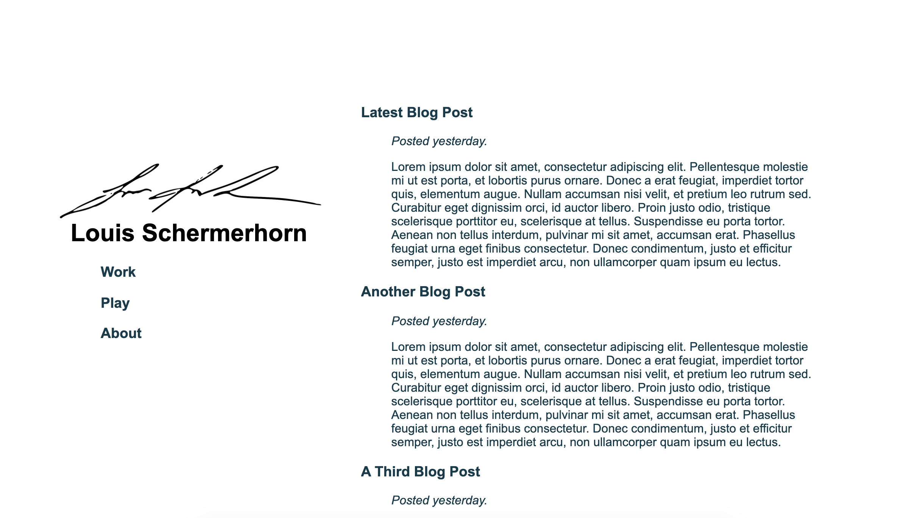

Hitting the wall
Written
Website
Written
Website
I've gotten my site to a place where I'm starting to respect the structure and design of it. Now I'm getting worried about the back-end, and painting myself into a corner before I realize just how complex that corner is. Right now, the site looks like the below (further down).
I think that's pretty nifty-looking. But now I'm worried about that blogging infrastructure. How do I actually make a blog, from scratch? A google search for these things are predictably pointing me to WordPress. And I get that is probably the best solution for me. But the point of this exercise is to learn and manage everything myself. And I have time to do so. So I'd like to try. Investigating! 